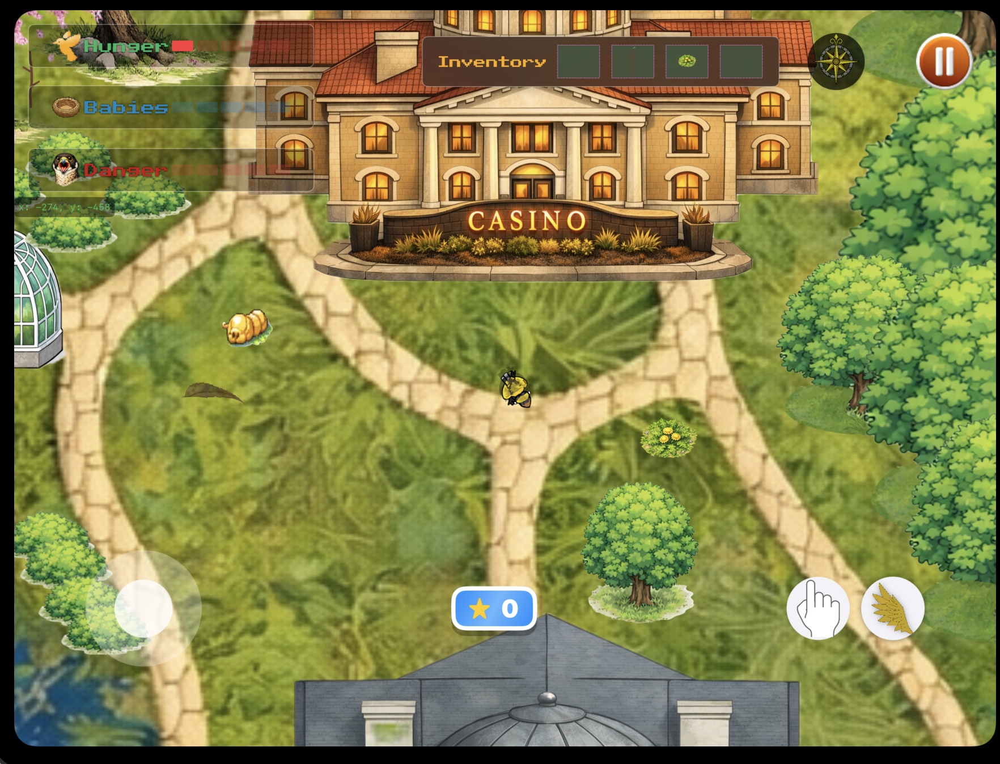
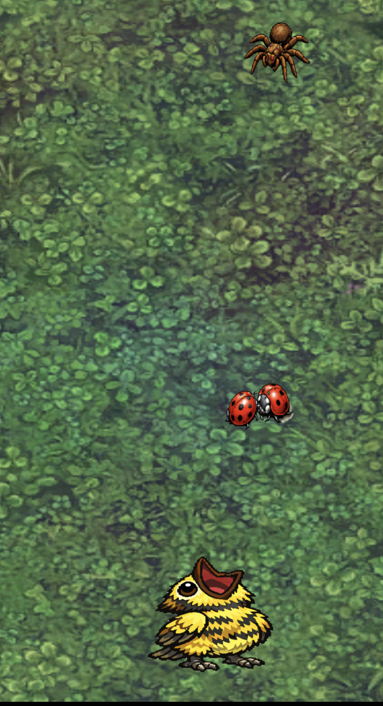
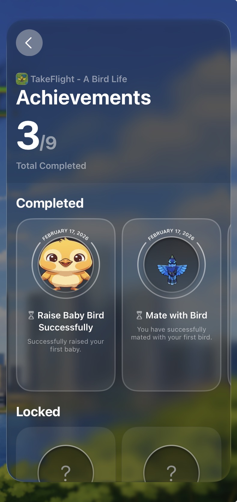
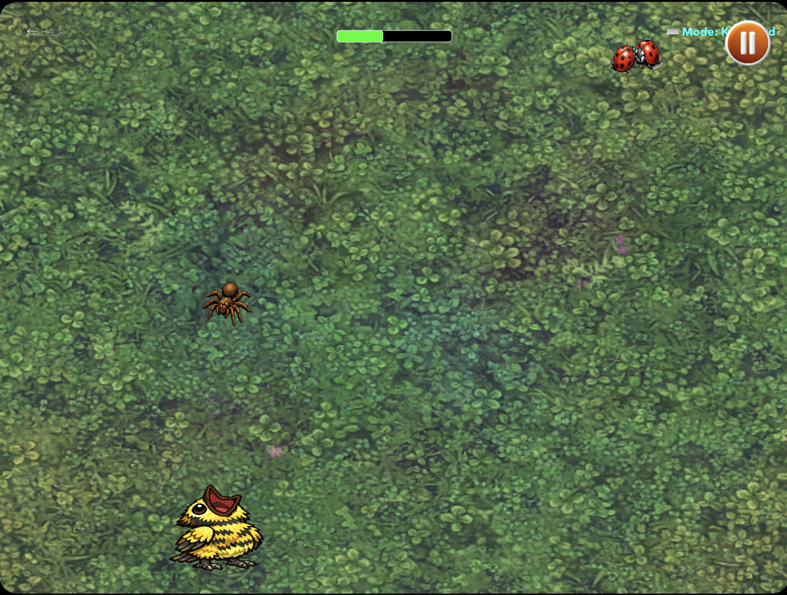
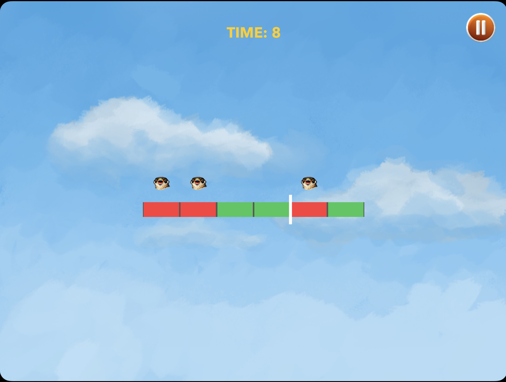

Start a run!
Begin your journey on Belle Isle, jump into quick challenges, and start building score momentum.
A high-score survival game where players master memory, coordination, speed, and reflexes across five experiences.
Take Flight is a Belle Isle inspired, 5-in-1 mini game collection built in 6 weeks at the Apple Developer Academy.
The game loop focuses on surviving, growing your nest, and chasing high scores across challenges focused on memory, coordination, speed, and reflexes.
Team: 5
Role: iOS Developer
Timeline: 01/11/2026 - 02/20/2026

Begin your journey on Belle Isle, jump into quick challenges, and start building score momentum.

Rotate through mini games that test memory, coordination, speed, and reflexes.

Survive longer, manage multiple nests, and watch your high score climb.

Track achievement progress and jump back in with smarter strategies each run.

Keep your hunger up by testing coordination with the quick feeding mini game.
Collect materials around the island and find the perfect nesting tree.

Feed your baby birds regularly to earn extra points and boost your score.

Dodge dangerous threats around the island to keep your run alive.

Navigate your way out under pressure and survive the final chase.
I worked across the whole game, but focused most on the systems that made it feel complete and replayable.
Highlights from the core systems I owned and implemented in Take Flight.
// Call once at app start or main menu.
@MainActor
func authenticateLocalPlayer(presentingViewController: UIViewController?) async {
let localPlayer = GKLocalPlayer.local
localPlayer.authenticateHandler = { viewController, error in
if let viewController, let presentingViewController {
presentingViewController.present(viewController, animated: true)
return
}
if let error {
print("Game Center auth error: \(error.localizedDescription)")
return
}
self.isAuthenticated = localPlayer.isAuthenticated
}
}
// Set an achievement to 100% immediately.
func completeAchievement(id: String, showBanner: Bool = true) async {
guard GKLocalPlayer.local.isAuthenticated else { return }
let achievement = GKAchievement(identifier: id)
achievement.percentComplete = 100
achievement.showsCompletionBanner = showBanner
do {
try await GKAchievement.report([achievement])
} catch {
print("Achievement report error: \(error.localizedDescription)")
}
}// Custom Joystick
ZStack {
Circle() // Background
.fill(.white.opacity(0.3))
Circle() // Thumbstick
.fill(.white.opacity(0.8))
.frame(width: radius, height: radius)
.offset(x: fingerLocation.x, y: fingerLocation.y)
.gesture(
DragGesture(minimumDistance: 0)
.onChanged { value in
isDragging = true
let dx = value.translation.width
let dy = value.translation.height
// Clamp to joystick radius
let distance = hypot(dx, dy)
let angle = atan2(dy, dx)
let clamped = min(distance, radius)
// Knob position inside the base circle
let knob = CGPoint(x: cos(angle) * clamped, y: sin(angle) * clamped)
fingerLocation = knob
// Normalize and flip Y so up is positive in SpriteKit
viewModel.joystickVelocity = CGPoint(x: knob.x / radius, y: -knob.y / radius)
}
.onEnded { _ in
isDragging = false
fingerLocation = .zero
viewModel.joystickVelocity = .zero
}
)
}
.frame(width: radius * 2, height: radius * 2)
.contentShape(Circle())if viewModel?.tutorialIsOn == true, viewModel?.inventoryFullOnce == false {
viewModel?.showMainGameInstructions(type: .nestBuilding)
viewModel?.inventoryFullOnce = true
}
enum RunState {
case tutorial
case active
case gameOver
}
@Published private(set) var state: RunState = .tutorial
func completeTutorial() {
state = .active
showTutorialOverlay = false
}
func restartToTutorial() {
state = .tutorial
showTutorialOverlay = true
}
struct MainOnboardingView: View {
@ObservedObject var viewModel: MainGameView.ViewModel
@Environment(\.dismiss) var dismiss
let type: MainGameView.ViewModel.InstructionType
var body: some View {
VStack(spacing: 16) {
Text("Tutorial").font(.system(.title, design: .rounded)).bold()
Text(viewModel.mainInstructionText(for: type))
.multilineTextAlignment(.center)
let resources = viewModel.mainInstructionImage(for: type)
if let imageName = resources.first {
Image(imageName).resizable().scaledToFit()
}
Button("Start") { dismiss() }
.buttonStyle(.borderedProminent)
}
.presentationDetents([.medium])
}
}override func update(_ currentTime: TimeInterval) {
handleKeyboardMapInput()
if viewModel?.isMapMode == true { return }
viewModel?.currentMessage = ""
if lastUpdateTime == 0 { lastUpdateTime = currentTime }
let rawDelta: CGFloat = CGFloat(currentTime - lastUpdateTime)
let deltaTime = min(max(rawDelta, 1.0/120.0), 1.0/30.0)
lastUpdateTime = currentTime
positionPersistAccumulator += deltaTime
if positionPersistAccumulator >= 1.0 {
positionPersistAccumulator = 0
if let player = childNode(withName: "userBird") {
viewModel?.savedPlayerPosition = player.position
}
viewModel?.savedCameraPosition = cameraNode.position
viewModel?.saveState()
}
healthAccumulator += deltaTime
if healthAccumulator >= 35.0 {
healthAccumulator = 0
if let current = viewModel?.hunger, current > 0 { viewModel?.hunger = current - 1 }
}
guard let player = childNode(withName: "userBird") else { return }
updatePlayerPosition(deltaTime: deltaTime)
clampPlayerToMap()
updateCameraFollow(target: player.position, deltaTime: deltaTime)
clampCameraToMap()
}The final build feels like one survival game, not a bunch of disconnected mini-games. Everything feeds the same loop, keep hunger up, avoid predators, build nests, and push your score higher, so each challenge has a clear purpose. Shared input, UI messaging, and scene transitions keep the experience consistent across SwiftUI + SpriteKit.
Next, I'd add adaptive difficulty so the game adjusts based on how you're playing, things like predator pressure, timers, and spawn rates. I'd also add more little milestone moments so progression feels clearer between the big goals. And I'd start tracking a few more stats besides score and hunger (time survived, nests completed, failed attempts) so I can balance the difficulty and pacing using real numbers instead of guessing.